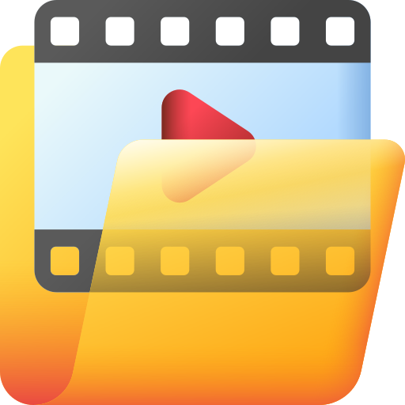
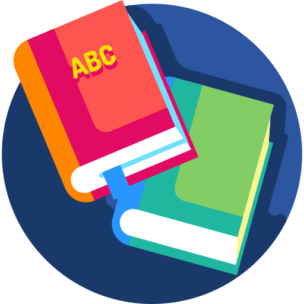
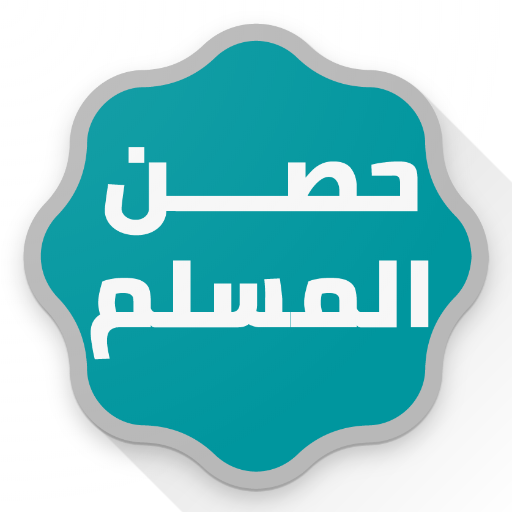
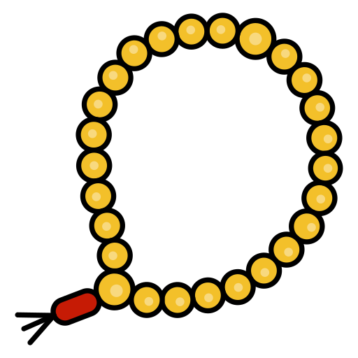
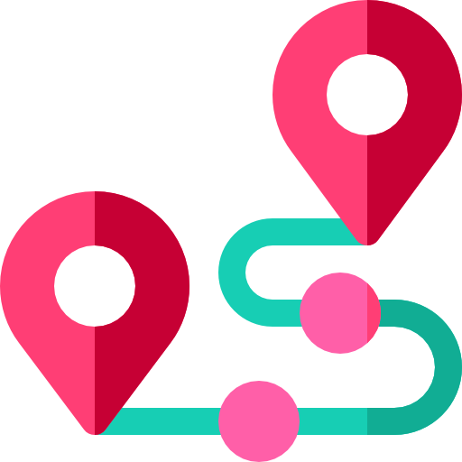
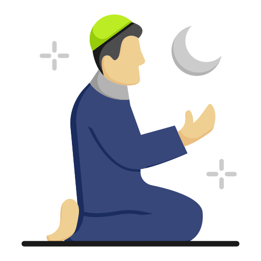
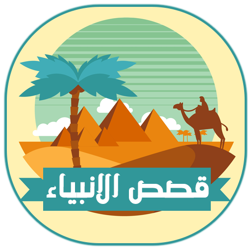
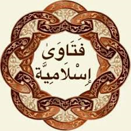

مميزات تطبيق Zad Bono
اكتشف أكثر من 30 ميزة متنوعة تجعل تطبيق Zad Bono رفيقك المثالي في رحلتك الإيمانية

منظومة الإشعارات التفاعلية
اجعل يومك كله ذكراً لله مع نظام إشعارات ذكي وتفاعلي لم يسبق له مثيل.
- أذكار صوتية متجددة: استقبل إشعارات صوتية بأذكار متنوعة تجعل لسانك رطباً بذكر الله.
- تنبيهات العبادات اليومية: إشعار صوتي لأذكار الصباح والمساء وتذكير بقيام الليل.
- رفيقك إلى الصلاة: تنبيهات قبل كل صلاة للاستعداد والتهيؤ.

الأذان ومواقيت الصلاة
لن تفوتك صلاة بعد اليوم. نقدم لك نظاماً دقيقاً لمواقيت الصلاة مع تجربة أذان كاملة.
- مواقيت دقيقة: حساب أوتوماتيكي لمواقيت الصلاة بناءً على موقعك الجغرافي.
- أذان كامل: استمع للأذان كاملاً بصوت الشيخ مشاري بن راشد العفاسي.
- تنبيهات مخصصة: تفعيل تنبيهات قبل وبعد الأذان.
💡 تأكد من منح التطبيق صلاحية الوصول إلى الموقع لضمان دقة مواقيت الصلاة.

دليلك الذكي "مانوس"
شريكك في رحلتك الإيمانية والمساعد الذكي الأول من نوعه في تطبيق إسلامي شامل.
- اسأله ما شئت في أمور الدين، واحصل على إجابات دقيقة وموثوقة.
- مصمم خصيصاً للرد على الاستفسارات الدينية.
- تجربة تفاعلية فريدة لتعميق فهمك وبناء معرفتك الشرعية.

القرآن الكريم: تجربة متكاملة
تجربة قرآنية شاملة تجمع بين القراءة النصية والاستماع الصوتي والتفسير والبحث.
- قراءة بدون إنترنت: تصفح كامل نصوص القرآن الكريم في أي وقت ومكان.
- مكتبة صوتية ضخمة: استمع للقرآن بصوت 11 من كبار المقرئين.
- تفسير ميسّر: اختر بين "التفسير الميسر" و "المختصر في التفسير".
- متابعة القراءة والبحث: عد بسهولة إلى آخر آية توقفت عندها.

البث المباشر
عالم من المحتوى المرئي والمسموع بين يديك. تنقل بسلاسة بين مجموعة منتقاة.
- قنوات دينية: شاهد برامجك الدينية المفضلة مباشرة.
- محطات إذاعية: استمع إلى تلاوات القرآن الكريم والبرامج الدينية.
- قنوات إخبارية: ابقَ على اطلاع بآخر المستجدات.
💡 للاستمتاع بتجربة مشاهدة واستماع مثالية، نوصي باستخدام اتصال إنترنت جيد.

فيديوهات مختارة
مكتبة مرئية متجددة تضم كنوزاً من العلم والمعرفة. شاهد وحمّل مقاطع فيديو دينية قيمة.
- شاهد فيديوهات متنوعة تشمل قصص الأنبياء، خطب مؤثرة، وأحاديث نبوية مشروحة.
- حمّل المقاطع التي تهمك على جهازك بضغطة زر للمشاهدة لاحقاً.

المكتبة الإسلامية (PDF)
مكتبتك الشرعية الخاصة التي ترافقك أينما ذهبت. تصفح وحمّل عشرات الكتب القيمة.
- أقسام متنوعة: كتب في التفسير، الحديث، الفقه، السيرة، العقيدة، قصص الأنبياء.
- تحميل مباشر: حمّل أي كتاب ليبقى على جهازك بشكل دائم للقراءة بدون إنترنت.
- سهولة الوصول: التطبيق يتذكر الكتب التي حملتها ويسمح لك بفتحها مباشرة.
💡 لأفضل تجربة قراءة، نوجهك لتحميل قارئ ملفات PDF الموصى به.

حصن المسلم
رفيقك اليومي الذي لا غنى عنه. يجمع لك التطبيق كامل محتوى كتاب "حصن المسلم".
- أذكار الصباح والمساء، أذكار النوم، أدعية الدخول والخروج، وغيرها الكثير.
- تنظيم سهل وواضح للوصول إلى الذكر أو الدعاء الذي تحتاجه في وقته.
تحديد اتجاه القبلة
أينما كنت حول العالم، لن تفوتك الصلاة في وقتها. استخدم بوصلة القبلة الذكية.
- تحديد دقيق للقبلة باستخدام مستشعرات جهازك.
- واجهة بسيطة وواضحة، فقط وجّه هاتفك حتى يضيء المؤشر الأخضر.

السبحة الإلكترونية
سبحتك الرقمية بتصميم جذاب وخيارات تخصيص كاملة لتجعل ذكر الله أيسر وأمتع.
- أهداف تسبيح: اختر بين عداد 33، 99، أو اتركه مفتوحاً.
- تنبيهات ذكية: اهتزاز أو صوت عند كل تسبيحة، مع تنبيه خاص عند إتمام الهدف.
- تحكم كامل: يمكنك تفعيل أو إلغاء الاهتزاز والصوت، وتصفير العداد بلمسة زر.

متتبع الختمة (فردي وجماعي)
نظام اجتماعي فريد لتحفيزك على ختم القرآن الكريم، سواء بمفردك أو بمشاركة الأصدقاء.
- الختمة الفردية: ابدأ ختمتك الخاصة، سجل تقدمك بسهولة، وتابع ما تبقى لك.
- الختمة الجماعية: أنشئ ختمة جماعية وادعُ أصدقاءك، أو انضم إلى ختمات متاحة.
- نظام حجز الأجزاء: يمكن لكل مشارك حجز جزء لقراءته، وعند إتمامه يتم تحديث التقدم.

متتبع الصلوات
أداة قوية لمساعدتك على المحافظة على صلاتك وتقييم أدائك.
- تسجيل يومي سهل: بلمسة زر سجل حالة كل صلاة من الصلوات الخمس.
- إحصائيات شهرية: احصل على تقرير مفصل عن أدائك، أفضل صلاة حافظت عليها.
- نظام إنجازات تحفيزي: احصل على شارات مثل "بطل الفجر" و "محب الجماعة".
الرقية الشرعية الشاملة
حصنك الكامل من كل سوء. يجمع لك التطبيق الرقية الشرعية من القرآن والسنة.
- آيات الرقية: عرض كامل لآيات الرقية الشرعية، كل آية في بطاقة منفصلة.
- أدعية من السنة: مجموعة من الأدعية النبوية المأثورة للرقية مع ذكر مصدرها.
- آيات السحر: قسم مخصص لآيات إبطال السحر، بنفس طريقة العرض المنظمة.

زاد التعليمي
دليلك المصوّر خطوة بخطوة لإتقان العبادات الأساسية.
- تعلم العبادات: شرح مفصل لكيفية الوضوء، التيمم، وأداء الصلاة.
- صلوات ومناسك: دليل شامل لأداء صلاة العيدين، صلاة الجنازة، والحج والعمرة.
- وسائل إيضاح: كل خطوة مدعومة بصورة توضيحية وشرح دقيق.
التقويم المزدوج والأحداث
ابقَ على علم بالتواريخ والمناسبات الهامة مع تقويم يجمع بين الهجري والميلادي.
- عرض شهري متكامل: تصفح التقويمين الهجري والميلادي معاً بوضوح.
- بطاقة أحداث اليوم: اضغط على أي يوم لعرض بطاقة تفصيلية تظهر لك المناسبات.
- تنبيهات ذكية: يذكرك بأيام الصيام المستحبة، الأعياد، والمناسبات الدينية.

قصص الأنبياء
رحلة عبر الزمن مع سير الأنبياء والمرسلين، من بداية الخلق إلى خاتم المرسلين.
- موسوعة شاملة: تصفح قائمة بأسماء الأنبياء، واختر القصة التي تود قراءتها.
- سرد متسلسل: كل قصة تبدأ بربطها بنهاية قصة النبي الذي سبقها.
- تفاصيل شاملة: تغطي كل قصة حياة النبي من مولده إلى وفاته.
أسماء الله الحسنى
تعرّف على الله سبحانه وتعالى وتدبّر في عظمته من خلال أسمائه الحسنى.
- عرض تفاعلي: 99 بطاقة مصممة بشكل جذاب، كل بطاقة تحمل اسماً من أسماء الله الحسنى.
- شرح المعنى: اضغط على أي بطاقة ليظهر لك شرح مفصل لمعنى هذا الاسم العظيم.
- تجربة إيمانية: وسيلة رائعة لتعميق صلتك بالله من خلال معرفة أسمائه وصفاته.

فتاوى وأحكام
مرجعك الموثوق للإجابة على استفساراتك الفقهية والحياتية.
- أقسام متخصصة: تصفح الفتاوى بسهولة عبر أقسام منظمة (فقهية، أسرية، صيام، حج).
- موثوقية عالية: كل فتوى تُعرض بنص السؤال الأصلي وإجابة العلماء المعتمدين.
- مرجع شامل: إجابات شافية لأغلب ما قد يطرأ على المسلم من أسئلة.
تطبيق زاد بونو بالأرقام
جاهز لبدء رحلتك الإيمانية؟
حمّل تطبيق Zad Bono الآن واستمتع بتجربة إيمانية شاملة ومتكاملة
📥 حمل التطبيق الآن